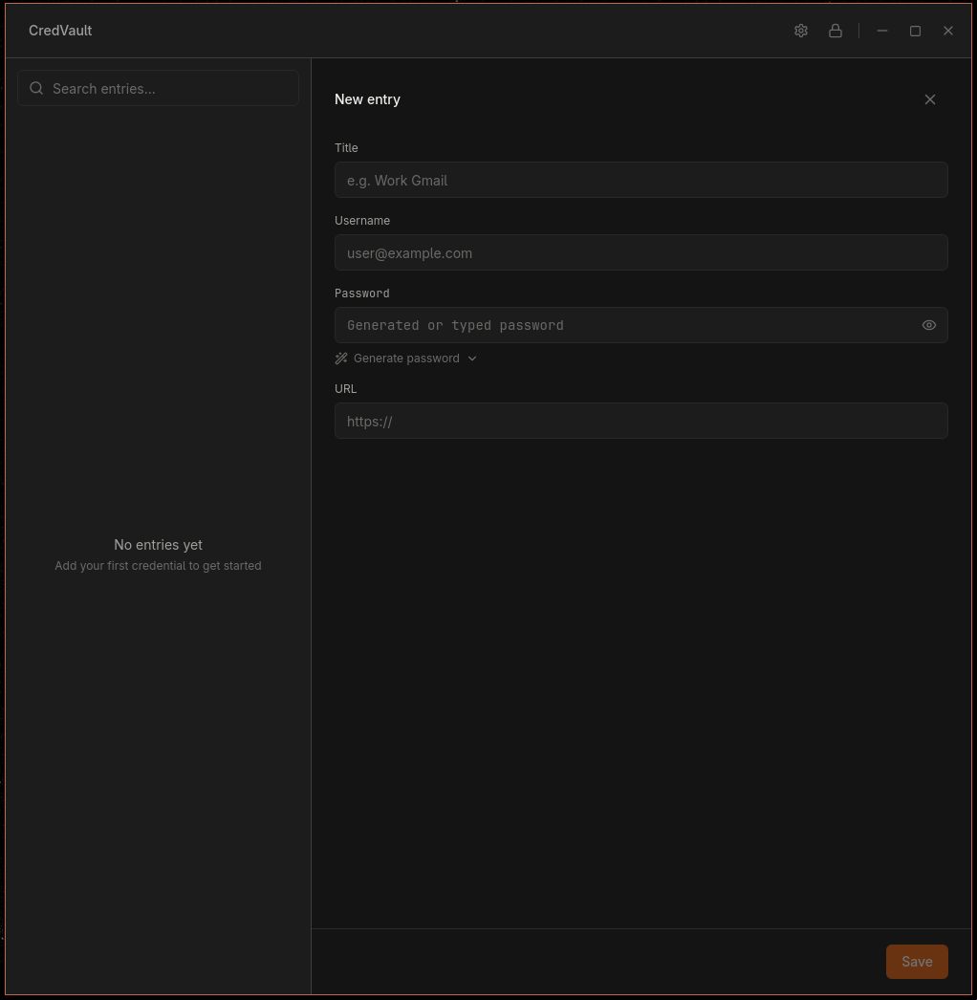
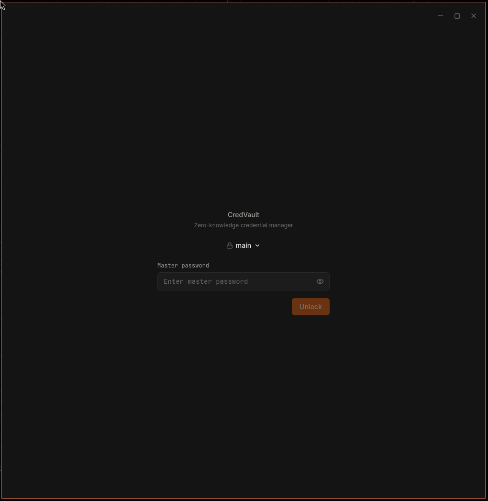
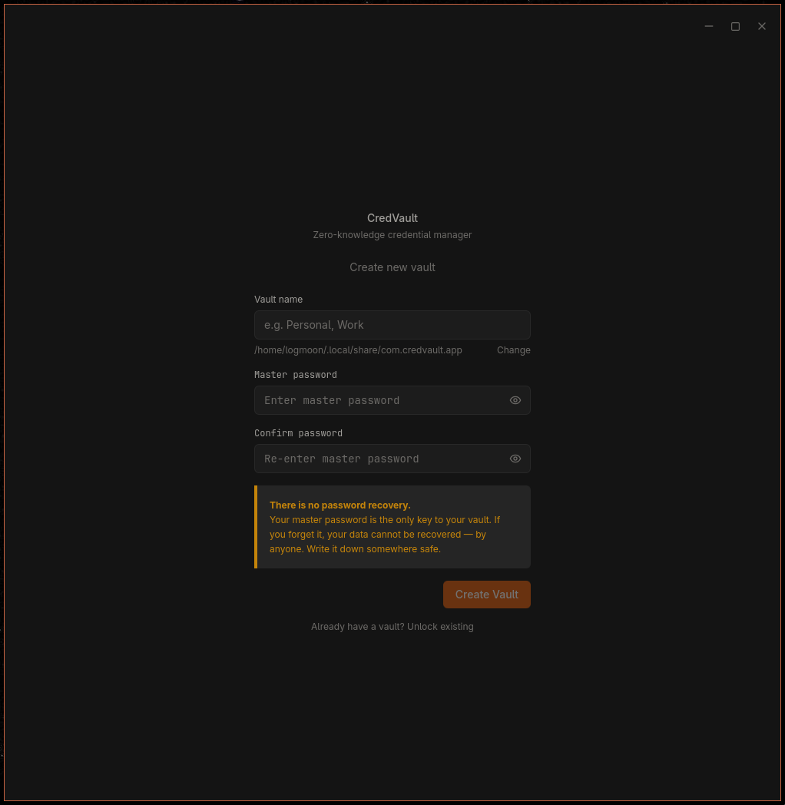
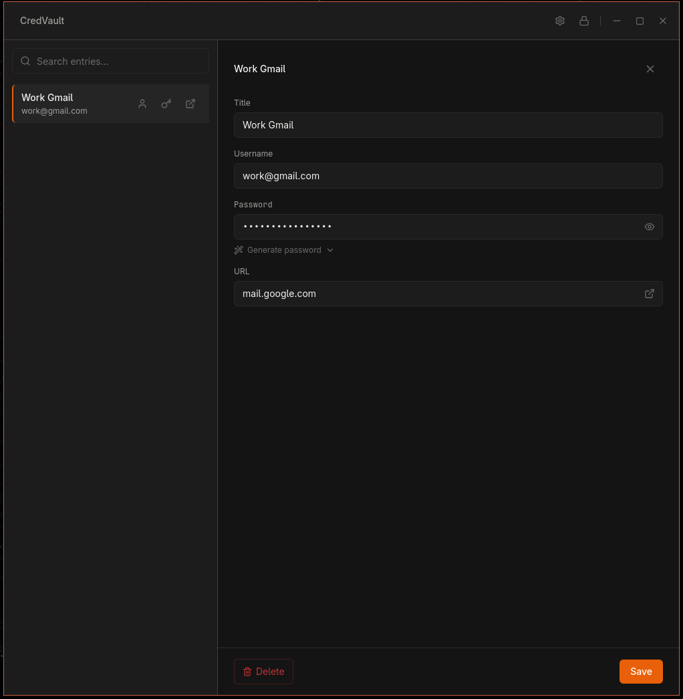
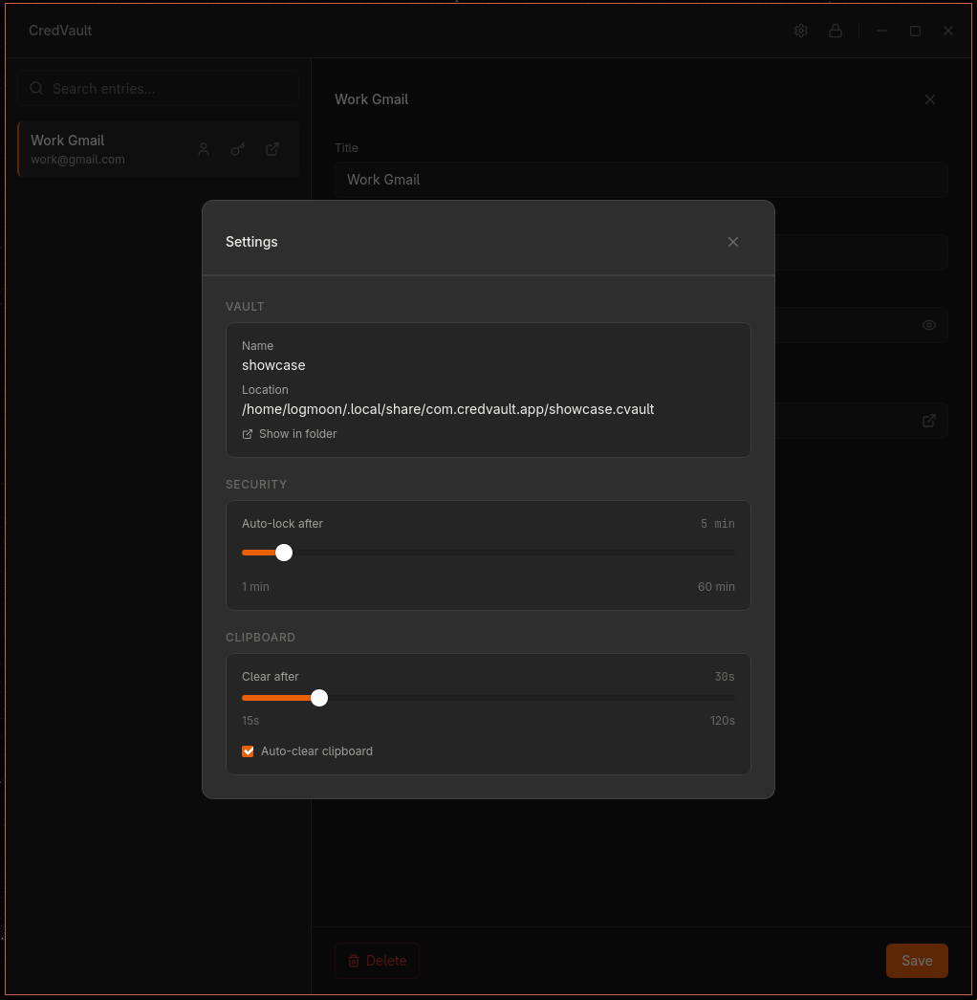

CredVault
Project Description
CredVault is a local-first, zero-knowledge credential manager. One encrypted file, one master password, no accounts, no servers.
It's the iteration of a several attempts to create a clean and secure password manager, one of these published initial iterations is InfoEncryptor. This is I'd say the password manager I actually wanted, it follows the same philosophy as my previous iterations (such as InfoEncryptor) which is that every mainstream option either runs a server that holds your credentials or ships a browser extension with a big attack surface. CredVault skips both: your vault is a single encrypted file on your own disk, and the app makes no network calls at all.
What It Does
- Create and unlock a vault with one master password
- Add, edit, and delete credentials: title, username, password, URL
- One-click copy for username or password, with the clipboard auto-clearing after a configurable timeout, countdown included
- Built-in password generator, length 8-64, pick your character sets
- Auto-lock after inactivity
- Instant client-side search
- Passwords are hidden by default, reveal with the eye toggle or copy without ever seeing them
Sync Without a Server
There's no sync service. You point the vault path at a folder you already sync, like Dropbox, iCloud or Google Drive, and the provider moves an encrypted blob it can't read. If two devices end up with different versions, you get a simple prompt: keep this device's vault or keep the cloud copy.
Security
- Argon2id (64 MB memory cost) derives the key, AES-256-GCM encrypts the vault
- The master password is never stored, and the derived key is zeroed from memory right after each operation
- All crypto happens in Rust. The frontend never sees a key, a salt, or a raw cipher primitive
- A wrong password fails the auth tag, so it never returns partial or garbage data
- Writes are atomic: crash mid-save and the vault is still intact
- No telemetry, no network calls
And there's no password recovery, by design. Forget the master password and the data is gone, for anyone. The app tells you that once, clearly, and then it's on you.
The Vault File
.cvault is a versioned binary format: a plaintext header (magic bytes, Argon2 parameters, salt, timestamps) followed by an encrypted JSON payload. The format is documented in the repo, so if this app stopped existing tomorrow, you could still decrypt your vault with standard CLI tools. That was a goal from day one, no lock-in to my own app.
Built With create-project
This one means a lot to me, because it was built entirely through create-project's workflow. Every session started by restoring memory and context, every feature started with /architect and an approved plan, review ran before close-out, and the invariants and UI rules held from the first commit to the v0.1.1 release. No re-briefing the agent, no decisions getting forgotten. It's the best proof I have that this system works on a real project, not just a toy.
Shipped and Installable
v0.1.1 is out with installers for Linux (.deb, .rpm, .AppImage) and Windows (.msi and an NSIS .exe). The CI pipeline gates release builds behind checks and keeps the Arch PKGBUILD checksum in sync, so you can build it from source on Arch today. AUR and macOS builds are still on the list, the latter just needs a Mac I don't have. GPL-3.0 licensed.
Screenshots




